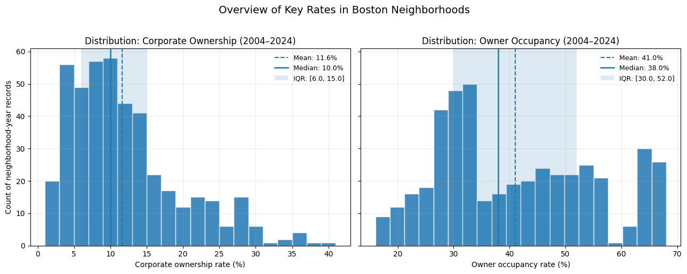
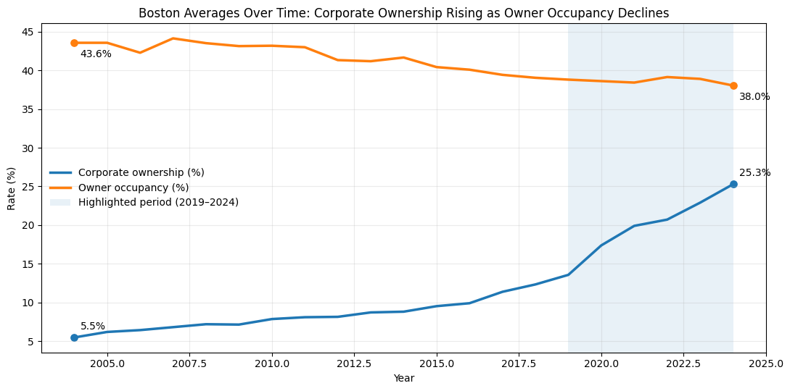
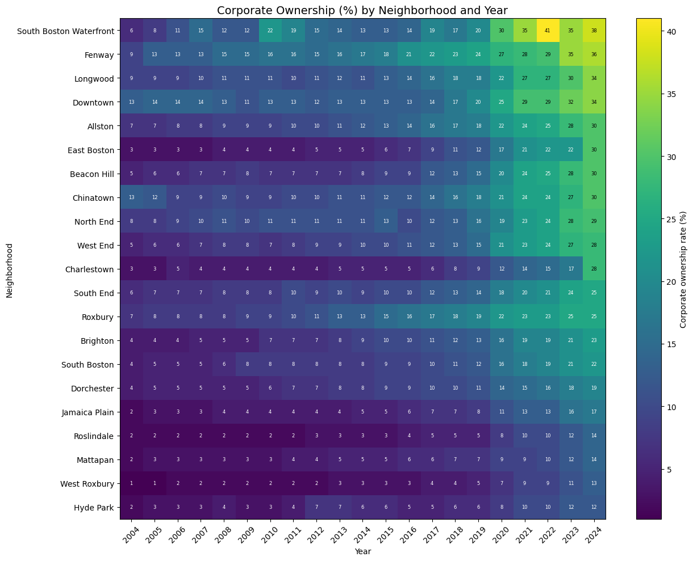
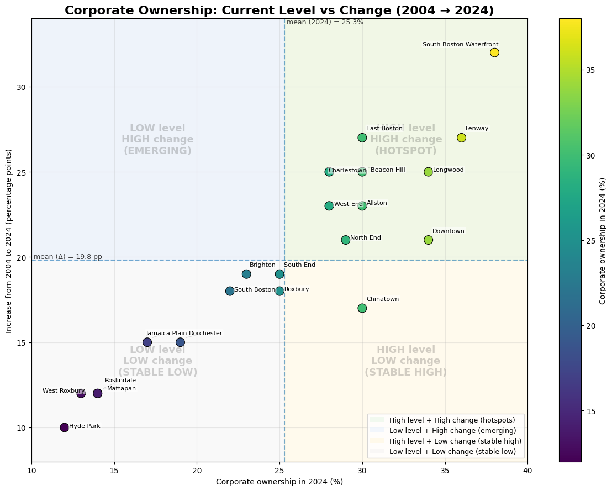
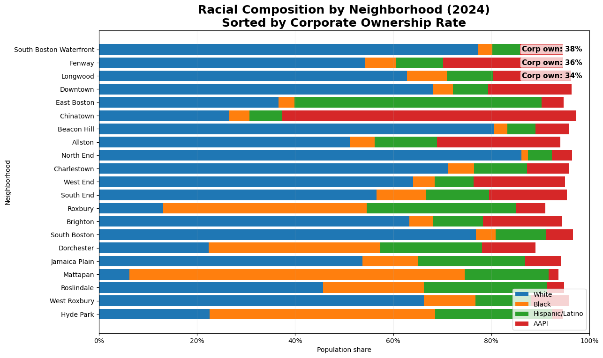
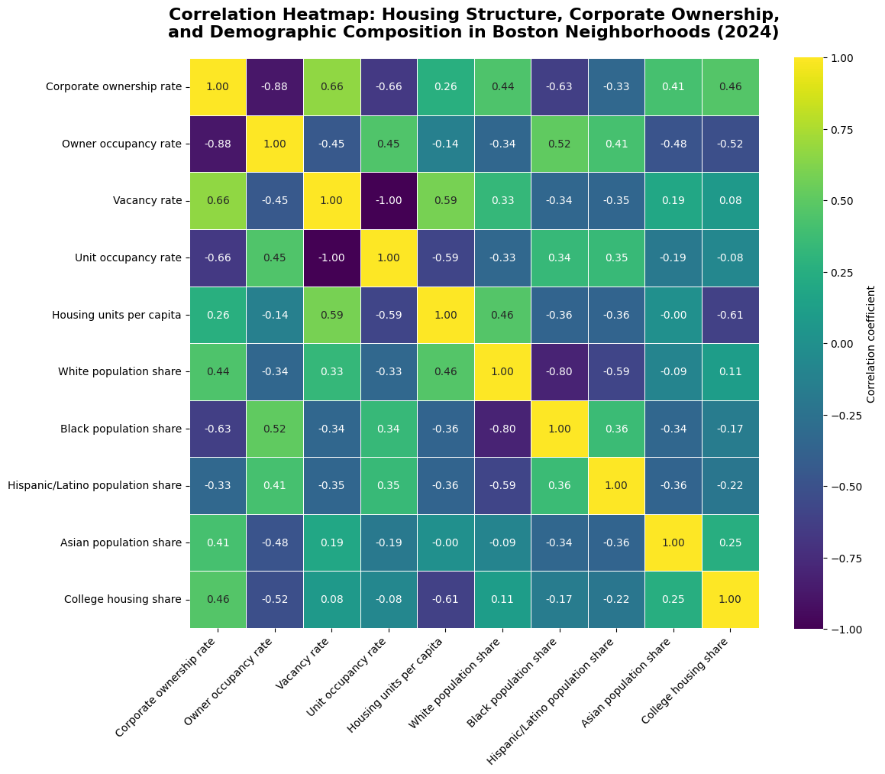
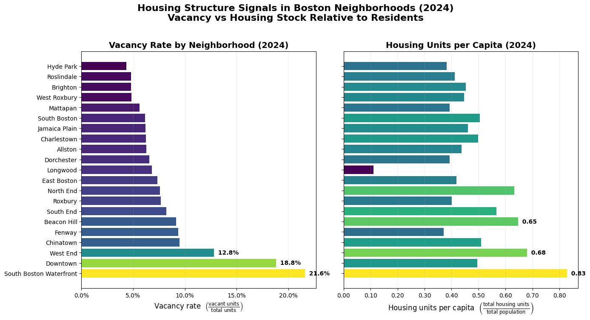

This report explores speculation-related housing dynamics in Boston using neighborhood-level trends in corporate ownership and owner occupancy (2004–2024), and connecting them to housing structure signals (vacancy rate and housing units per capita) and demographic composition (2024).
Overall Analysis Questions
How have corporate ownership and owner occupancy changed over time across Boston neighborhoods (2004–2024)?
Which neighborhoods diverge most from the citywide trend, and when do major increases occur?
Which neighborhoods look like “hotspots” of speculative dynamics?
Specifically, which neighborhoods combine high corporate ownership levels in 2024 with large increases since 2004, and how do these relate to vacancy and housing supply per capita?
How does demographic composition correlate with corporate ownership in 2024?
Are there visible structural patterns linking ownership with racial/ethnic composition, housing structure, and college housing presence?
Discoveries & Insights

Figure 1 — Corporate ownership levels at selected milestones (2010–2024).
This chart provides an initial overview of corporate ownership evolution in the most affected neighborhoods. Even at early milestones such as 2010 and 2015, several neighborhoods already exhibited elevated ownership rates, suggesting that recent increases are part of longer-running structural trends rather than sudden shocks. The consistent upward shifts across nearly all neighborhoods indicate broad systemic growth rather than isolated local anomalies.

Figure 2 — Corporate ownership evolution across neighborhoods (2004–2024 heatmap).
The heatmap reveals both temporal and spatial heterogeneity. While nearly all neighborhoods show gradual increases, some areas—such as South Boston Waterfront, Fenway, and Longwood—experience accelerated growth after approximately 2018. This suggests a possible regime shift or intensification phase in ownership patterns during the late 2010s, potentially aligned with broader financial or housing market changes.

Figure 3 — Distribution and citywide trends.
Corporate ownership shows a right-skewed distribution, with most neighborhood-year observations clustered at lower values but with a growing high-ownership tail. This indicates increasing inequality across neighborhoods rather than uniform growth.

Figure 4 — Current level vs long-term increase.
This quadrant visualization identifies clear “hotspots” where ownership is both high and rapidly increasing. These areas represent the strongest candidates for speculation-driven housing dynamics.

Figure 5 — Demographic composition relative to corporate ownership (2024).
Sorting neighborhoods by corporate ownership reveals systematic demographic differences across the ownership spectrum. While not causal, these structural associations suggest that ownership concentration may intersect with broader neighborhood demographic and socioeconomic patterns.

Figure 6 — Structural correlations between ownership, housing supply, and demographics.
The correlation matrix highlights strong negative association between corporate ownership and owner occupancy, confirming that increased institutional ownership corresponds to reduced resident ownership. Relationships with housing supply indicators further suggest structural housing market mechanisms underlying ownership shifts.

Figure 7 — Vacancy and housing units per capita (2024).
Neighborhoods with high vacancy and high housing units per capita may indicate areas where housing is held as investment rather than primary residence. These structural signals provide additional supporting context when interpreting ownership concentration patterns.
Summary
Between 2004 and 2024, corporate ownership increased substantially across Boston neighborhoods, with accelerated growth after approximately 2018. This increase is unevenly distributed, with specific neighborhoods emerging as ownership “hotspots” characterized by both high levels and rapid change.
These patterns coincide with structural housing signals such as higher vacancy rates and lower owner occupancy, suggesting broader shifts in housing function from residential use toward investment or institutional ownership. Demographic and structural differences further contextualize these ownership patterns, indicating that corporate ownership growth is embedded within broader spatial and socioeconomic housing dynamics.